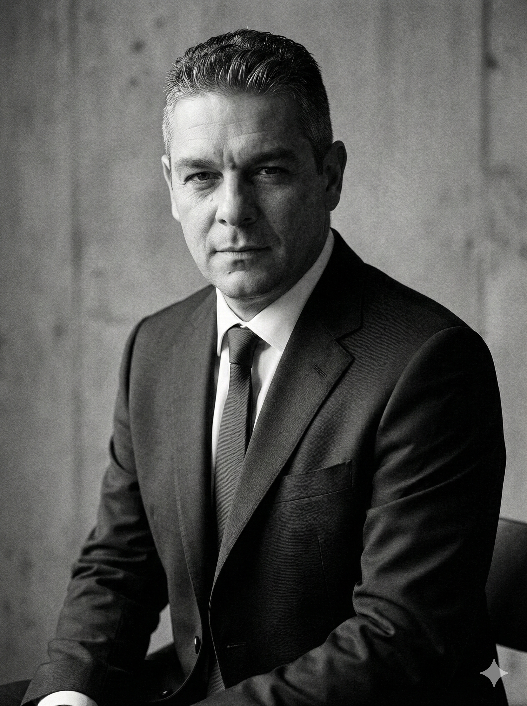

Trasformo i processi aziendali con automazione intelligente e innovazione digitale.

Sono Luigi De Rose, un professionista con oltre 20 anni di esperienza nel settore pubblico e privato, specializzato nello sviluppo di soluzioni innovative per l'automazione dei processi amministrativi e industriali, con un focus specifico sulle piccole e medie imprese.
Ho costruito da zero i Sistemi Informativi di Vallecrati S.p.A., azienda che gestiva i servizi di raccolta rifiuti e depurazione per oltre 300 dipendenti su tutta la provincia di Cosenza. Attualmente in Kratos S.c.a.r.l. coordino la logistica e gestisco i Sistemi Informativi.
Come consulente freelance, ho seguito oltre 10 clienti tra PMI locali e aziende internazionali, tra cui Aqara (Cina), nel settore della domotica e dei protocolli IoT (Zigbee).
Dal primo audit alla piena implementazione, accompagno le PMI in ogni fase della loro trasformazione digitale.
Riduci tempi, errori e costi eliminando i processi manuali. Progetto e implemento workflow automatizzati su misura per la tua azienda.
Costruisco infrastrutture IT scalabili che crescono con la tua azienda. Dalle basi alla piena integrazione digitale.
Implemento protocolli IoT avanzati (Zigbee, Z-Wave, MQTT) per connettere device, automatizzare ambienti e raccogliere dati in tempo reale.
Guido le piccole e medie imprese verso l'innovazione con un approccio pratico e orientato ai risultati concreti.
Ogni progetto racconta una trasformazione. Esperienze chiave che dimostrano il valore del mio approccio.
Costruzione da zero dell'infrastruttura IT completa per la gestione di raccolta rifiuti e depurazione sull'intera provincia di Cosenza.
Sviluppo applicazione integrata per la gestione degli interventi sulle reti fognarie: pianificazione, tracking real-time e reportistica.
Consulenza tecnica per l'integrazione dei protocolli IoT Zigbee nel mercato italiano. Supporto tecnico su device e ecosistema smart home.
Conosco le specificità del mercato calabrese e del Sud Italia. Sono vicino ai miei clienti, fisicamente e mentalmente.
Ho lavorato con aziende in Cina e su diversi mercati globali. Porto una prospettiva ampia a ogni progetto.
Non teoria. Soluzioni concrete, implementabili e misurabili. Ogni progetto ha obiettivi chiari e KPI definiti.
Aggiornamento costante sulle ultime tecnologie. University of Colorado Boulder e certificazioni settoriali.
Scrivo di innovazione, tecnologia e trasformazione digitale. Argomenti concreti per chi vuole restare al passo.
C'è un momento nella storia in cui una persona giusta dice una cosa giusta al momento giusto. Riflessione sull'incontro tra etica e intelligenza artificiale.
leggi su LinkedInRiflessione sul ruolo dell'Innovation Manager nelle PMI italiane e su come la prospettiva cambia tutto.
leggi su LinkedInUna guida pratica per scegliere il protocollo IoT più adatto alla tua infrastruttura aziendale.
in arrivoChe tu abbia un'idea da sviluppare, un processo da ottimizzare o semplicemente voglia capire come l'innovazione può aiutare la tua azienda, sono qui per ascoltarti.